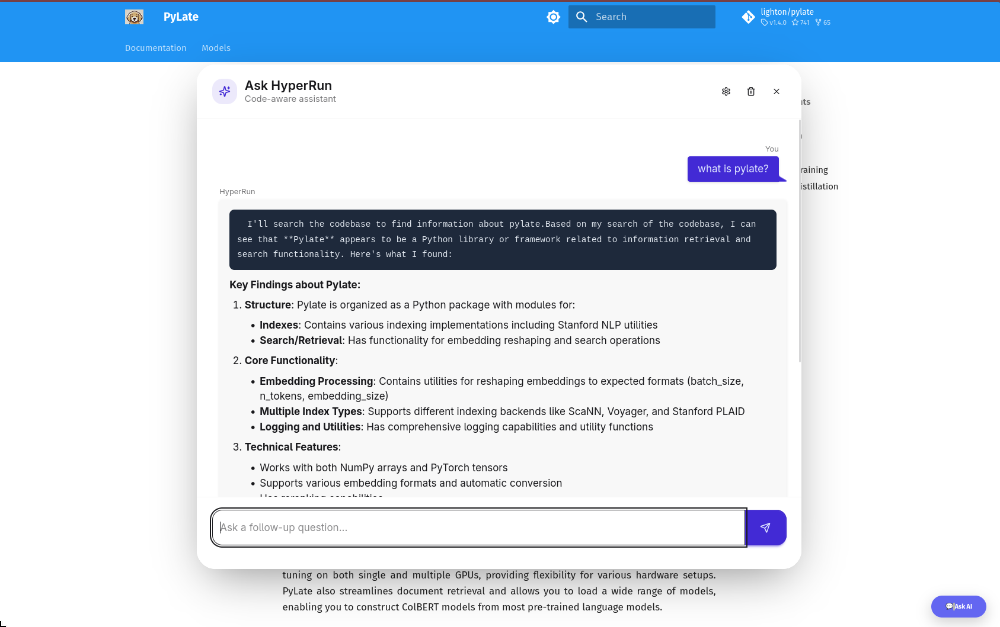

HyperRun + ColGrep: A Self-Hosted Alternative to RunLLM
Documentation sites are where developers go for answers, but finding what you need in a large codebase can be frustrating.
RunLLM solved this by adding an “Ask AI” chat widget to docs, letting users ask questions in natural language and get answers grounded in the actual code.
But RunLLM is closed-source and hosted.
If you want control over your data, your models, and your costs — you’re out of luck.
- maybe you want to let the user use its own AI model (BYOK)
- It’s better for the user and no cost for you
- Way faster than the RunLLM
RunLLM is more than this
RunLLM is much more than just a chat with your docs. I first found it in the Documentation of DSPy, I liked it and i use it multiple times so i am trying to replicate this part only with other features as opensource
HyperRun is my attempt to build an open-source, self-hosted alternative.
It combines ColGrep’s semantic code search with LLM chat, and can be embedded in any docs site — Quarto, nbdev, MkDocs, or plain GitHub Pages — with a single line of code.
What is HyperRun ?
HyperRun lets developers add a semantic code search chat widget to their docs.
Built on ColGrep for indexing, Lisette for LLM orchestration, and FastHTML for the UI.

HyperRun Features
Semantic code search — powered by ColGrep’s late-interaction retrieval
Streaming chat — SSE-based responses via HTMX
Multi-provider — supports Anthropic, OpenAI, Google and more via LiteLLM
BYOK — users bring their own API key
Chat history — persistent conversations per session
Cost tracking — per-session token cost display
DaisyUI styled — floating widget with chat bubbles and markdown rendering
Embeddable — drop into any static site (Quarto, MkDocs, GitHub Pages) with one snippet
Why ColGrep
Most coding agents still use grep to search codebases.
It works — but it’s pure pattern matching.
If you don’t know the exact function name, you’re stuck guessing.
Semantic search (RAG) solves this but introduces problems:
Requires remote storage of your code (security concern)
Needs a separate vector DB service running
Keeping the index in sync with a fast-moving codebase is hard
ColGrep takes a completely different approach. It’s a Rust CLI tool built by LightOn that:
Mirrors the grep interface — agents already know how to use it
Runs entirely locally — no remote storage, no separate API service
Uses late-interaction retrieval (ColBERT-style) via LateOn-Code models — not traditional embeddings
- We are using their specialized coding retrieval model 17M
Supports hybrid queries — regex filtering first, then semantic ranking on the filtered results
Incremental index updates — only re-indexes changed files, not the whole repo
- They are using a nice hashing trick 😎
Tree-sitter parsing — extracts functions, classes, signatures, call graphs — not just raw text chunks
The results speak for themselves:
Won 70% of head-to-head comparisons against vanilla grep with Claude Code
Cut token usage by 15.7% on average
56% fewer search operations needed to find the right code
Hard conceptual questions (where you describe behavior, not function names) benefit the most
Late-interaction vs traditional embeddings
Traditional embeddings compress an entire code block into a single vector — losing detail.
Late-interaction models (like ColBERT) keep per-token vectors, so they can do soft matching between query terms and code tokens.
This is why ColGrep handles “find the function that inserts articles into the database” better than a single-vector approach.
For HyperRun, ColGrep is the retrieval layer — it finds the relevant code semantically, then Lisette sends it to the LLM for a conversational answer.
How It Works
HyperRun has two sides — the Doc Author who sets it up, and the End User who asks questions.
What Happens When a User Asks a Question
- User clicks “💬 Ask AI” → floating chat panel opens
- User types a question → sent to the server via HTMX
- Server calls
colgrepwith the query → gets the top matching code snippets - Lisette’s
AsyncChatsends the snippets + question to the LLM as a tool call - LLM response streams back via SSE → rendered as markdown in the chat bubble
The LLM never sees your whole codebase — only the relevant snippets ColGrep finds. This keeps context small, responses fast, and costs low.
BYOK
End users can click the ⚙️ settings icon, pick a provider (Anthropic, OpenAI, Google, etc.), enter their own API key, and choose a model — all dynamically populated from LiteLLM.
What’s Next
HyperRun is still early — here’s what I’m working on:
Citations — show which code snippets the LLM used to answer, so users can verify
GitHub Actions — auto re-index on push, auto deploy the server — zero manual steps
Better nbdev support — ColGrep struggles with
.ipynbfiles, so we index the exported.pypackage for nowSecure BYOK — move API keys from session cookies to server-side encrypted storage
Switching embedding models — let doc authors choose which ColGrep model to use
If you want to try it or contribute: github.com/abdelkareemkobo/hyperrun